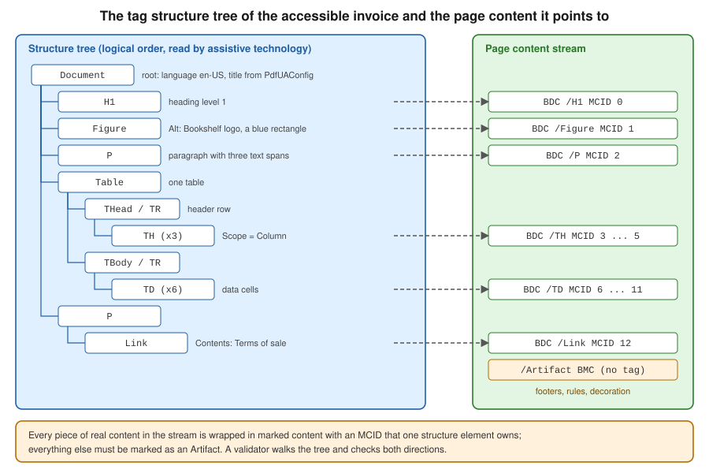

PDF/A & PDF/UA with iText
|
This content was generated with the assistance of AI and should be verified against the official documentation before being relied on in production. |
A PDF that looks right is not necessarily a PDF that an archive accepts or that a screen reader can read. PDF/A is the family of ISO standards for files that must stay readable for decades, and PDF/UA is the pair of standards for files that people with assistive technology can use. This page shows how to write both with iText 9.8.0 (as of 2026-10-09, on Java 21): which document class and which enumeration value select each profile, what the library requires you to provide (an embedded font, an output intent, a title, a language, alternative text), how the structure tree of a tagged file is built, how to put "Page n of m" in a footer without breaking an archival file, and how to validate the result with veraPDF. The profiles themselves, their levels and the Factur-X invoice format are introduced in PDF Standards & Conformance; the document and writer objects are those of Document Lifecycle, and the fonts rule that PDF/A imposes is explained in Fonts & Unicode. The Bookshelf Billing invoice of this section is used throughout. Every example below was compiled with Java 21, run against iText 9.8.0, and the output was checked with veraPDF 1.30.3.
The pdfa and pdfua modules are part of the itext-core aggregator, so the dependency of the first example is all
that is needed. iText Core is available under the AGPLv3 or under a commercial licence; a closed-source service needs the
commercial one, as described in iText Architecture &
Modules. Everything on this page is in iText Core and needs no add-on.
Choosing the document class
In iText 9 you do not switch a flag on a normal PdfDocument. You create the subclass that matches the profile, and
the subclass installs the checkers that validate what you write. The profile itself is described by enumerations of the
kernel module, and by a small value class that combines them.
| Class | Selected by | Remarks |
|---|---|---|
|
|
An output intent is a constructor argument, so it cannot be forgotten. Part 4 has no level a, b or u, only the base profile and the variants E (engineering) and F (embedded files). |
|
|
Title and language are constructor arguments of the configuration for the same reason. |
|
|
The Well Tagged PDF profile of the PDF Association (WTPDF), which builds on PDF/UA-2 and adds rules for reuse of the content. Mentioned here for completeness and not covered further. |
|
Built from a |
Read with |
Both document classes are subclasses of PdfDocument, so everything that you know from the lifecycle page, such as
Document, PdfCanvas, event handlers and try-with-resources, works unchanged. The subclasses differ in one
important behaviour: they validate while you write. A document that violates the profile fails with a
PdfAConformanceException or a PdfUAConformanceException, whose message names the broken rule, instead of producing a
file that fails later in an audit. The next sections show the messages that iText 9.8.0 produced in tests.
Derived from the Refactored PDF Conformance
Architecture article of the iText knowledge base and the iText API documentation of
PdfADocument,
PdfUADocument and
PdfConformance.
PDF/A with iText
A PDF/A file is self-contained: it embeds every font, describes its colours in a device-independent way, carries XMP
metadata that states which part and level it claims, and contains no JavaScript, no external content and, in the
older parts, no encryption. PdfADocument takes care of the metadata, because it writes the pdfaid:part and
pdfaid:conformance properties of the XMP packet from the PdfAConformance you pass. The remaining requirements are
yours:
-
Output intent. The document must declare the colour space in which it was designed. An output intent is an ICC profile together with a name, and iText represents it as
PdfOutputIntent. The example builds one from the sRGB profile that ships with the JDK, which is enough for tests and for documents that use RGB only. For production, use a licensed profile that you are allowed to embed, such as the sRGB profile published by the International Color Consortium, and a CMYK profile for print. -
Embedded fonts. Standard fonts such as
Helvetica, which the layout module uses when you set no font, are not embedded, andPdfADocumentrejects them. Create the font from a file withEmbeddingStrategy.FORCE_EMBEDDED, as in the example, and set it on theDocument. The font page of this section covers subsetting and Unicode. -
Title, tags and language for level a. Level a (1a, 2a, 3a) requires a tagged document with a natural language, and a title is required for PDF/UA.
pdf.setTagged()starts the structure tree,getCatalog().setLang(PdfString)sets the language andgetDocumentInfo().setTitle(String)the title. Levels b and u do not require tags, but they are harmless and recommended, because the same file then helps screen readers. -
Everything that is not content is an artifact. A header, a footer or a decorative rule drawn on a tagged page must be marked as an artifact, which tells readers to skip it. The next section shows how.
The following program creates the invoice as a tagged PDF/A-2a file. Maven coordinates (iText Core 9.8.0 is AGPLv3 or commercial):
<dependency>
<groupId>com.itextpdf</groupId>
<artifactId>itext-core</artifactId>
<version>9.8.0</version>
<type>pom</type>
</dependency>package com.example.billing;
import com.itextpdf.io.font.PdfEncodings;
import com.itextpdf.kernel.font.PdfFont;
import com.itextpdf.kernel.font.PdfFontFactory;
import com.itextpdf.kernel.font.PdfFontFactory.EmbeddingStrategy;
import com.itextpdf.kernel.geom.PageSize;
import com.itextpdf.kernel.geom.Rectangle;
import com.itextpdf.kernel.pdf.PdfAConformance;
import com.itextpdf.kernel.pdf.PdfDocument;
import com.itextpdf.kernel.pdf.PdfOutputIntent;
import com.itextpdf.kernel.pdf.PdfPage;
import com.itextpdf.kernel.pdf.PdfString;
import com.itextpdf.kernel.pdf.PdfViewerPreferences;
import com.itextpdf.kernel.pdf.PdfWriter;
import com.itextpdf.kernel.pdf.canvas.CanvasArtifact;
import com.itextpdf.kernel.pdf.canvas.PdfCanvas;
import com.itextpdf.kernel.pdf.event.AbstractPdfDocumentEvent;
import com.itextpdf.kernel.pdf.event.AbstractPdfDocumentEventHandler;
import com.itextpdf.kernel.pdf.event.PdfDocumentEvent;
import com.itextpdf.kernel.pdf.xobject.PdfFormXObject;
import com.itextpdf.layout.Document;
import com.itextpdf.layout.element.Cell;
import com.itextpdf.layout.element.Paragraph;
import com.itextpdf.layout.element.Table;
import com.itextpdf.layout.properties.TextAlignment;
import com.itextpdf.layout.properties.UnitValue;
import com.itextpdf.pdfa.PdfADocument;
import java.awt.color.ColorSpace;
import java.awt.color.ICC_Profile;
import java.io.ByteArrayInputStream;
import java.io.IOException;
import java.io.InputStream;
import java.nio.file.Files;
import java.nio.file.Path;
/** Creates a tagged PDF/A-2a invoice with a "Page n of m" footer that is marked as an artifact. */
public final class ArchivableInvoice {
private record Line(String title, int quantity, String total) {
}
/** Draws "Page n of m" at the bottom of every page, as an artifact, with the embedded font. */
private static final class FooterHandler extends AbstractPdfDocumentEventHandler {
private static final float FONT_SIZE = 9;
private static final float TOTAL_WIDTH = 24;
private final PdfFont font;
private final PdfFormXObject total = new PdfFormXObject(new Rectangle(0, 0, TOTAL_WIDTH, 12));
FooterHandler(PdfFont font) {
this.font = font;
}
@Override
protected void onAcceptedEvent(AbstractPdfDocumentEvent event) {
PdfDocumentEvent docEvent = (PdfDocumentEvent) event;
PdfDocument pdf = docEvent.getDocument();
PdfPage page = docEvent.getPage();
Rectangle box = page.getPageSize();
String prefix = "Page " + pdf.getPageNumber(page) + " of ";
float x = box.getWidth() / 2 - 30;
PdfCanvas canvas = new PdfCanvas(page.newContentStreamAfter(), page.getResources(), pdf);
// Page furniture is not content: PDF/A level A requires it to be an artifact
canvas.openTag(new CanvasArtifact());
canvas.beginText().setFontAndSize(font, FONT_SIZE).moveText(x, box.getBottom() + 24)
.showText(prefix).endText();
canvas.addXObjectAt(total, x + font.getWidth(prefix, FONT_SIZE), box.getBottom() + 22);
canvas.closeTag();
canvas.release();
}
/** Writes the final page count into the placeholder, once the content is complete. */
void writeTotal(PdfDocument pdf) {
PdfCanvas canvas = new PdfCanvas(total, pdf);
canvas.openTag(new CanvasArtifact());
canvas.beginText().setFontAndSize(font, FONT_SIZE).moveText(0, 2)
.showText(String.valueOf(pdf.getNumberOfPages())).endText();
canvas.closeTag();
canvas.release();
}
}
private ArchivableInvoice() {
}
public static void main(String[] args) throws IOException {
Path fontFile = Path.of(args[0]);
Path output = Path.of(args[1]);
// sRGB profile shipped with the JDK; use a licensed profile in production
byte[] icc = ICC_Profile.getInstance(ColorSpace.CS_sRGB).getData();
PdfOutputIntent intent;
try (InputStream in = new ByteArrayInputStream(icc)) {
intent = new PdfOutputIntent("Custom", "", "http://www.color.org", "sRGB IEC61966-2.1", in);
}
try (PdfADocument pdf = new PdfADocument(new PdfWriter(output.toString()),
PdfAConformance.PDF_A_2A, intent);
Document document = new Document(pdf, PageSize.A4)) {
// Level A needs a tagged document, a title and a natural language
pdf.setTagged();
pdf.getCatalog().setLang(new PdfString("en-US"));
pdf.getCatalog().setViewerPreferences(new PdfViewerPreferences().setDisplayDocTitle(true));
pdf.getDocumentInfo().setTitle("Invoice BB-2026-0001");
PdfFont font = PdfFontFactory.createFont(Files.readAllBytes(fontFile),
PdfEncodings.IDENTITY_H, EmbeddingStrategy.FORCE_EMBEDDED);
document.setFont(font);
FooterHandler footer = new FooterHandler(font);
pdf.addEventHandler(PdfDocumentEvent.END_PAGE, footer);
document.add(new Paragraph("Bookshelf Billing - invoice BB-2026-0001").setFontSize(16));
Table table = new Table(UnitValue.createPercentArray(new float[] {6, 1, 2}))
.useAllAvailableWidth();
table.addHeaderCell(new Cell().add(new Paragraph("Title")));
table.addHeaderCell(new Cell().add(new Paragraph("Qty")));
table.addHeaderCell(new Cell().add(new Paragraph("Total (EUR)")));
for (Line line : new Line[] {
new Line("Refactoring, second edition", 2, "79.80"),
new Line("Designing Data-Intensive Applications", 1, "42.00")}) {
table.addCell(new Cell().add(new Paragraph(line.title())));
table.addCell(new Cell().add(new Paragraph(String.valueOf(line.quantity()))
.setTextAlignment(TextAlignment.RIGHT)));
table.addCell(new Cell().add(new Paragraph(line.total())
.setTextAlignment(TextAlignment.RIGHT)));
}
document.add(table);
// All content is laid out, so the page count is known: fill the placeholder
footer.writeTotal(pdf);
}
}
}The program passes a TrueType font file and an output path as arguments, and it uses the Java 21 idioms that replace
the style of the older books: a record for the invoice line, try-with-resources so that the writer and the document
are closed in the right order even when a conformance check fails, and Path and Files instead of stream classes. The
document class is the first object created in the try header and the layout Document the second, so they close in
reverse order, and closing the PdfADocument is what writes the cross-reference table and the XMP metadata. The
resulting file passes the veraPDF PDF/A-2a profile (see the validation section).
Derived from the iText knowledge base chapter
Creating PDF/UA and PDF/A documents, the
articles on PDF/A-1, PDF/A-2 and
PDF/A-3, and the API documentation of
PdfAConformance. The
tutorials describe the same steps with the API of iText 7, and where they differ the code above, which was compiled,
is the reference.
Page numbers and other page furniture in PDF/A
The footer of the example reuses the placeholder technique of
Page Events: Headers, Footers & Watermarks: the handler draws
"Page n of " on every page, leaves a small PdfFormXObject where the total goes, and writes the total into it before
the document closes. Three details differ from the plain version, and they are the reason this section exists:
-
The handler uses the embedded font that the document uses, not
Helvetica. A footer that quietly uses a standard font makes the whole file invalid. -
The text and the placeholder are drawn between
canvas.openTag(new CanvasArtifact())andcanvas.closeTag(). In a tagged document (level a, and every PDF/UA file), content that is not part of the structure tree must be marked as an artifact, or it is reported as untagged real content. The same call is needed in the code that fills the placeholder, because the form XObject has its own content stream. -
The total is written after
document.addhas laid out all the content, and before the close. Writing it earlier yields the wrong number, and later is impossible, because the placeholder is flushed with the document.
Text extraction confirmed the result, Page 1 of 1 at the bottom of the page. The same rule applies to a watermark or a
background: draw it as an artifact, and use a graphics state with transparency only in the parts that allow
transparency (PDF/A-1 forbids it, parts 2, 3 and 4 allow it).
Derived from the iText knowledge base article
Adding page numbers to an existing PDF and the API
documentation of
CanvasArtifact.
The PDF/A parts compared
Parts 1 to 4 differ in what they allow, and the claim that a file makes must match its content. The next program writes
one tiny invoice for each of the profiles that iText can create from the PdfAConformance values, and attaches a small
CSV file to the profiles that are meant to carry attachments. It shows the constructor, the two accessors
getPart() and getLevel() of the enumeration, and how the same code produces every part.
package com.example.billing;
import com.itextpdf.io.font.PdfEncodings;
import com.itextpdf.kernel.font.PdfFont;
import com.itextpdf.kernel.font.PdfFontFactory;
import com.itextpdf.kernel.font.PdfFontFactory.EmbeddingStrategy;
import com.itextpdf.kernel.pdf.PdfAConformance;
import com.itextpdf.kernel.pdf.PdfName;
import com.itextpdf.kernel.pdf.PdfOutputIntent;
import com.itextpdf.kernel.pdf.PdfString;
import com.itextpdf.kernel.pdf.PdfWriter;
import com.itextpdf.kernel.pdf.filespec.PdfFileSpec;
import com.itextpdf.layout.Document;
import com.itextpdf.layout.element.Paragraph;
import com.itextpdf.pdfa.PdfADocument;
import java.awt.color.ColorSpace;
import java.awt.color.ICC_Profile;
import java.io.ByteArrayInputStream;
import java.io.IOException;
import java.nio.charset.StandardCharsets;
import java.nio.file.Files;
import java.nio.file.Path;
import java.util.LinkedHashMap;
import java.util.Map;
/** Writes one minimal file per PDF/A profile, to compare what each part allows. */
public final class ArchiveProfiles {
private ArchiveProfiles() {
}
private static PdfOutputIntent srgbIntent() throws IOException {
byte[] icc = ICC_Profile.getInstance(ColorSpace.CS_sRGB).getData();
return new PdfOutputIntent("Custom", "", "http://www.color.org", "sRGB IEC61966-2.1",
new ByteArrayInputStream(icc));
}
static void write(Path file, PdfAConformance conformance, Path fontFile, boolean attach) throws IOException {
try (PdfADocument pdf = new PdfADocument(new PdfWriter(file.toString()), conformance, srgbIntent());
Document document = new Document(pdf)) {
pdf.getDocumentInfo().setTitle("Invoice BB-2026-0001 (" + conformance + ")");
// Tagging and a language are required at level a only, and are harmless at the other levels
pdf.setTagged();
pdf.getCatalog().setLang(new PdfString("en-US"));
PdfFont font = PdfFontFactory.createFont(Files.readAllBytes(fontFile),
PdfEncodings.IDENTITY_H, EmbeddingStrategy.FORCE_EMBEDDED);
document.setFont(font);
document.add(new Paragraph("Bookshelf Billing - " + conformance));
if (attach) {
PdfFileSpec spec = PdfFileSpec.createEmbeddedFileSpec(pdf,
"id,total\nBB-2026-0001,121.80\n".getBytes(StandardCharsets.UTF_8),
"Invoice data as CSV", "invoice.csv", new PdfName("text/csv"), null,
new PdfName("Data"));
pdf.addAssociatedFile("invoice.csv", spec);
}
}
}
public static void main(String[] args) throws IOException {
Path fontFile = Path.of(args[0]);
Path folder = Files.createDirectories(Path.of(args[1]));
// The parts, the levels, and whether the part lets you attach arbitrary files
Map<String, PdfAConformance> profiles = new LinkedHashMap<>();
profiles.put("a1b", PdfAConformance.PDF_A_1B);
profiles.put("a2b", PdfAConformance.PDF_A_2B);
profiles.put("a2u", PdfAConformance.PDF_A_2U);
profiles.put("a3b", PdfAConformance.PDF_A_3B);
profiles.put("a3u", PdfAConformance.PDF_A_3U);
profiles.put("a4", PdfAConformance.PDF_A_4);
profiles.put("a4f", PdfAConformance.PDF_A_4F);
for (var entry : profiles.entrySet()) {
PdfAConformance conformance = entry.getValue();
boolean attach = conformance == PdfAConformance.PDF_A_3B
|| conformance == PdfAConformance.PDF_A_3U
|| conformance == PdfAConformance.PDF_A_4F;
write(folder.resolve(entry.getKey() + ".pdf"), conformance, fontFile, attach);
System.out.println("Wrote " + entry.getKey() + ".pdf: part " + conformance.getPart()
+ ", level " + conformance.getLevel());
}
}
}Running it prints the part and level of each file. PDF/A-4 has no level, so getLevel() returns null for PDF_A_4
and the printed text says null, which is the value to expect rather than an error. All seven files passed the
matching veraPDF profile (1b, 2b, 2u, 3b, 3u, 4 and 4f). The table summarises how to choose between
them, with the choices that matter for the Bookshelf invoices in bold.
| Profile | Choose it when | iText value |
|---|---|---|
PDF/A-1b |
A very old archive requires part 1. No transparency and no attachments. |
|
PDF/A-2b, 2u |
A general archive of generated documents. 2u also requires a Unicode mapping for all text, so that text can be extracted. |
|
PDF/A-3b, 3u |
The invoice carries its data as an attachment (Factur-X, ZUGFeRD). Any file type may be attached. |
|
PDF/A-4, 4f, 4e |
New archives that can use PDF 2.0. Part 4 is based on PDF 2.0, 4f allows attachments of any type, and 4e is meant for engineering documents with 3D and rich media. |
|
PDF/A-4 support arrived in iText 8.0.2, per the knowledge base announcement iText 8.0.2 Delivers PDF/A-4 Support, and the level names of the enumeration follow the standard: there is no 4a, 4b or 4u, because part 4 dropped the levels that part 3 inherited from part 1.
PDF/A-3 and PDF/A-4 attachments: Factur-X
The reason to pick part 3 for an invoice is the attachment. Factur-X and ZUGFeRD put the invoice data in an XML file
embedded in a PDF/A-3 file, and the receiving software reads the XML while people read the pages. The complete
Factur-X-style program, with the XML placeholder, the /AF entry and the AFRelationship value, is on
PDF Standards & Conformance, and the program above shows
the same two calls in a compact form: PdfFileSpec.createEmbeddedFileSpec creates the file specification with a MIME
type and the relationship (Data, Source, Alternative, Supplement or Unspecified), and pdf.addAssociatedFile
registers it in the catalog. A real Factur-X file needs one more element that the library does not write for you, the
XMP extension schema that declares the fx: properties; take it from the specification of the format and from an
invoicing library such as the Mustang project.
The test of the "attachments" column of the table above is instructive. iText 9.8.0 accepted an attachment in a
PDF/A-2b document and in a PDF/A-4 document and wrote the file, and veraPDF then rejected both. For PDF_A_2B it
reported rule 6.8 of ISO 19005-2, which allows an embedded file only if that file is itself PDF/A, and for PDF_A_4 it
reported rule 6.9 of ISO 19005-4, which requires embedded files to be PDF/A-1, 2 or 4. Use PDF_A_3B, PDF_A_3U or
PDF_A_4F for arbitrary attachments. The lesson is that iText’s own checks are a first line of defence and not a
complete validator, which is why the validation section below runs an independent one.
Derived from the knowledge base article How to attach files to a PDF and ISO 19005-3 and 19005-4; see the References.
PDF/UA with iText
PDF/UA (ISO 14289, "Universal Accessibility") requires that the content of a file is available to assistive
technology: a screen reader must find the text in the right order, know what is a heading, a table or a link, get a
description of every meaningful image, and know the language of the text so that it can choose a voice. The
technique is the tagged PDF: next to the visual content stream the file has a structure tree of tags (Document,
H1, P, Table, Figure and so on) that describes the logical structure and points to the pieces of the page.

In iText 9 PdfUADocument builds this tree while you add layout elements, and it checks the rules. The language and
the title are in the configuration object, because PDF/UA cannot be satisfied without them: the title shows in the
window title bar when the viewer is told to display it (the written file had DisplayDocTitle set to true without any
code of ours), and the language is the default for every piece of text. The example creates the invoice with a heading, an image with alternative text,
a decorative image, a table with header cells and a link, and writes either PDF/UA-1 or PDF/UA-2 depending on the third
argument.
package com.example.billing;
import com.itextpdf.io.font.PdfEncodings;
import com.itextpdf.io.image.ImageDataFactory;
import com.itextpdf.kernel.font.PdfFont;
import com.itextpdf.kernel.font.PdfFontFactory;
import com.itextpdf.kernel.font.PdfFontFactory.EmbeddingStrategy;
import com.itextpdf.kernel.pdf.PdfUAConformance;
import com.itextpdf.kernel.pdf.action.PdfAction;
import com.itextpdf.kernel.pdf.PdfVersion;
import com.itextpdf.kernel.pdf.PdfWriter;
import com.itextpdf.kernel.pdf.WriterProperties;
import com.itextpdf.kernel.pdf.tagging.PdfStructureAttributes;
import com.itextpdf.kernel.pdf.tagging.StandardRoles;
import com.itextpdf.layout.Document;
import com.itextpdf.layout.element.Cell;
import com.itextpdf.layout.element.Image;
import com.itextpdf.layout.element.Link;
import com.itextpdf.layout.element.Paragraph;
import com.itextpdf.layout.element.Table;
import com.itextpdf.layout.element.Text;
import com.itextpdf.layout.properties.TextAlignment;
import com.itextpdf.layout.properties.UnitValue;
import com.itextpdf.pdfua.PdfUAConfig;
import com.itextpdf.pdfua.PdfUADocument;
import javax.imageio.ImageIO;
import java.awt.Color;
import java.awt.image.BufferedImage;
import java.io.ByteArrayOutputStream;
import java.io.IOException;
import java.nio.file.Files;
import java.nio.file.Path;
/** Creates a tagged PDF/UA invoice: language, title, headings, alt text, table headers and a link. */
public final class AccessibleInvoice {
private AccessibleInvoice() {
}
/** A small generated PNG, standing in for the Bookshelf logo. */
private static byte[] logoPng() throws IOException {
BufferedImage image = new BufferedImage(120, 40, BufferedImage.TYPE_INT_RGB);
var g = image.createGraphics();
g.setColor(new Color(31, 95, 166));
g.fillRect(0, 0, 120, 40);
g.dispose();
var out = new ByteArrayOutputStream();
ImageIO.write(image, "png", out);
return out.toByteArray();
}
public static void main(String[] args) throws IOException {
Path fontFile = Path.of(args[0]);
Path output = Path.of(args[1]);
PdfUAConformance level = PdfUAConformance.valueOf(args.length > 2 ? args[2] : "PDF_UA_1");
// The title and the language are constructor arguments, so they cannot be forgotten
var config = new PdfUAConfig(level, "Invoice BB-2026-0001", "en-US");
// PDF/UA-2 is built on PDF 2.0, so the file version must be 2.0; UA-1 is fine with the default
var writerProperties = new WriterProperties();
if (level == PdfUAConformance.PDF_UA_2) {
writerProperties.setPdfVersion(PdfVersion.PDF_2_0);
}
try (PdfUADocument pdf = new PdfUADocument(new PdfWriter(output.toString(), writerProperties), config);
Document document = new Document(pdf)) {
PdfFont font = PdfFontFactory.createFont(Files.readAllBytes(fontFile),
PdfEncodings.IDENTITY_H, EmbeddingStrategy.FORCE_EMBEDDED);
document.setFont(font);
// A heading is a paragraph with the H1 role
Paragraph title = new Paragraph("Invoice BB-2026-0001").setFontSize(18);
title.getAccessibilityProperties().setRole(StandardRoles.H1);
document.add(title);
// A meaningful image needs alternative text
Image logo = new Image(ImageDataFactory.create(logoPng())).setWidth(90);
logo.getAccessibilityProperties().setAlternateDescription("Bookshelf logo, a blue rectangle");
document.add(logo);
// A decorative image is an artifact and is skipped by screen readers
Image rule = new Image(ImageDataFactory.create(logoPng())).setWidth(90).setHeight(2);
rule.getAccessibilityProperties().setRole(StandardRoles.ARTIFACT);
document.add(rule);
Paragraph intro = new Paragraph("Thank you for your order. ");
intro.add(new Text("Amount due: "));
intro.add(new Text("121.80 EUR"));
document.add(intro);
// A header cell is written as TD unless you ask for TH; Scope says what the header covers
Table table = new Table(UnitValue.createPercentArray(new float[] {6, 1, 2})).useAllAvailableWidth();
for (String header : new String[] {"Title", "Qty", "Total (EUR)"}) {
Cell cell = new Cell().add(new Paragraph(header));
cell.getAccessibilityProperties().setRole(StandardRoles.TH);
cell.getAccessibilityProperties().addAttributes(
new PdfStructureAttributes("Table").addEnumAttribute("Scope", "Column"));
table.addHeaderCell(cell);
}
String[][] rows = {{"Refactoring, second edition", "2", "79.80"},
{"Designing Data-Intensive Applications", "1", "42.00"}};
for (String[] row : rows) {
table.addCell(new Cell().add(new Paragraph(row[0])));
table.addCell(new Cell().add(new Paragraph(row[1]).setTextAlignment(TextAlignment.RIGHT)));
table.addCell(new Cell().add(new Paragraph(row[2]).setTextAlignment(TextAlignment.RIGHT)));
}
document.add(table);
// A link annotation needs a /Contents description in PDF/UA
Link link = new Link("Terms of sale", PdfAction.createURI("https://www.example.com/terms"));
link.getLinkAnnotation().setContents("Terms of sale of Bookshelf Billing");
document.add(new Paragraph(link));
}
}
}The file passes veraPDF for profile ua1 in the UA-1 case and for ua2 in the UA-2 case. Points worth knowing, each
checked while writing this page:
-
Fonts must be embedded. Without the
setFontcall, the document fails withFollowing font(s) are not embedded: Helvetica, the same rule as in PDF/A. -
A heading is a role, not a font size.
StandardRoles.H1toH6create heading elements, and the checker rejects skipped levels: anH1followed by anH3fails withHeading level 2 is skipped in a descending sequence of header levels. Use headings in order, because screen reader users navigate by them. -
A meaningful image needs alternative text. An image added without
getAccessibilityProperties().setAlternateDescription(String)orsetActualText(String)fails withFigure tags shall include an alternative representation or replacement text. The description should say what the image conveys, not that it is an image. A purely decorative image (a rule, a background) gets the roleStandardRoles.ARTIFACTand disappears from the structure tree. -
Table headers need the TH role. iText writes the cells of
addHeaderCellinside aTHeadrow but, as the tree dump in the next section shows, asTDelements unless you setStandardRoles.TH. veraPDF accepted both forms in the test, but onlyTHelements, withScopeset toColumnorRow, tell a screen reader which header belongs to which cell, so set the role as the example does. -
A link annotation needs a description. The tag tree of a
Linkis not enough: PDF/UA-1 requires the annotation to have aContentsentry, and withoutgetLinkAnnotation().setContents(String)the document fails withAnnotation of type Link shall contain an alternate description via their Contents key. -
The language is checked. A configuration with an empty language fails with
Document does not contain valid lang entry. Language of individual passages in another language is set withgetAccessibilityProperties().setLanguage(String)on the element, for example for an English title inside a Spanish paragraph, because the standard asks for it whenever the language changes. -
PDF/UA-2 is a PDF 2.0 standard. With the default writer the UA-2 file was rejected by veraPDF because the file version was not 2.0 and the structure root lacked the PDF 2.0 namespace. Setting
PdfVersion.PDF_2_0in theWriterProperties, as the example does forPDF_UA_2, fixed both. UA-2 is a separate standard with its own checker in iText (PdfUA2Checker), so validate a migrated template with theua2profile of veraPDF instead of assuming that a UA-1 file stays valid.
Derived from the knowledge base articles
Creating a simple PDF/UA document and
Increased PDF/UA support and the API documentation of
PdfUAConfig. Those articles
show the iText 8 style of creating a PDF/UA document by a different route; with iText 9.8.0 the document class and
configuration above are the route that compiled and validated.
Tagging content that you draw by hand
The layout module tags everything it adds, but content that you draw on a PdfCanvas is invisible to the structure
tree until you tag it. The API for this is TagTreePointer, a cursor over the structure tree: addTag appends a new
element as a child of the current one and moves into it, moveToParent moves back out, getProperties() gives the
same alternative text, language and actual text settings that the layout elements have, and the canvas then wraps the
drawing operators in a marked-content sequence that refers to the tag with canvas.openTag(tags.getTagReference()).
The program below draws a heading and a small bar chart on a blank page. The chart is a single Figure with a text
description of the data, because a screen reader cannot read three rectangles, and the rule under it is an artifact.
package com.example.billing;
import com.itextpdf.io.font.PdfEncodings;
import com.itextpdf.kernel.colors.ColorConstants;
import com.itextpdf.kernel.font.PdfFont;
import com.itextpdf.kernel.font.PdfFontFactory;
import com.itextpdf.kernel.font.PdfFontFactory.EmbeddingStrategy;
import com.itextpdf.kernel.pdf.PdfPage;
import com.itextpdf.kernel.pdf.PdfUAConformance;
import com.itextpdf.kernel.pdf.PdfWriter;
import com.itextpdf.kernel.pdf.canvas.CanvasArtifact;
import com.itextpdf.kernel.pdf.canvas.PdfCanvas;
import com.itextpdf.kernel.pdf.tagging.StandardRoles;
import com.itextpdf.kernel.pdf.tagutils.TagTreePointer;
import com.itextpdf.pdfua.PdfUAConfig;
import com.itextpdf.pdfua.PdfUADocument;
import java.io.IOException;
import java.nio.file.Files;
import java.nio.file.Path;
/** Tags content that is drawn by hand on a canvas: a figure with alternative text, plus an artifact. */
public final class TaggedChart {
private TaggedChart() {
}
public static void main(String[] args) throws IOException {
Path fontFile = Path.of(args[0]);
Path output = Path.of(args[1]);
var config = new PdfUAConfig(PdfUAConformance.PDF_UA_1, "Monthly sales", "en-US");
try (PdfUADocument pdf = new PdfUADocument(new PdfWriter(output.toString()), config)) {
PdfFont font = PdfFontFactory.createFont(Files.readAllBytes(fontFile),
PdfEncodings.IDENTITY_H, EmbeddingStrategy.FORCE_EMBEDDED);
PdfPage page = pdf.addNewPage();
PdfCanvas canvas = new PdfCanvas(page);
// The pointer moves through the structure tree; the tag reference ties canvas content to it
TagTreePointer tags = new TagTreePointer(pdf);
tags.setPageForTagging(page);
tags.addTag(StandardRoles.H1);
canvas.openTag(tags.getTagReference())
.beginText().setFontAndSize(font, 18).moveText(50, 780).showText("Monthly sales").endText()
.closeTag();
tags.moveToParent();
// Three bars drawn with paths, described as one figure
tags.addTag(StandardRoles.FIGURE);
tags.getProperties().setAlternateDescription(
"Bar chart of sales per month: January 40, February 65, March 90 books");
canvas.openTag(tags.getTagReference());
canvas.setFillColor(ColorConstants.BLUE);
canvas.rectangle(50, 600, 40, 40).fill();
canvas.rectangle(110, 600, 40, 65).fill();
canvas.rectangle(170, 600, 40, 90).fill();
canvas.closeTag();
tags.moveToParent();
// A decorative rule is not content for a screen reader: mark it as an artifact
canvas.openTag(new CanvasArtifact());
canvas.setStrokeColor(ColorConstants.GRAY).moveTo(50, 590).lineTo(545, 590).stroke();
canvas.closeTag();
}
}
}Without setPageForTagging the pointer does not know which page the marked content belongs to, and iText fails with
Page is not set for the pdf tag structure; without the alternative description the figure fails the check, as above. Use the same pattern for anything that the layout
module cannot express: drawn charts, signature appearances, or stamps added by an event handler. For content that is
a picture of text, such as a scanned page, set setActualText with the text that the picture shows, so that it is
spoken instead of "figure".
Derived from the knowledge base article
Tagged PDF: Adding Alt to the Structure Tree
and the API documentation of
TagTreePointer.
Reading conformance and the structure tree
PdfDocument.getConformance() returns the PdfConformance of a document, also of one that you open for reading, and
it is how code can decide whether a file is PDF/A, PDF/UA or neither, before it stamps, signs or merges it.
isPdfA(), isPdfUA() and isWtpdf() answer the three questions, and getAConformance() and getUAConformance()
return the enumeration values. The next program prints that information for a file and then prints the structure tree
with the role of every element and the alternative text of those that have one. It is the quickest way to see what your
code produced, and it is the source of the tree in the figure above.
package com.example.billing;
import com.itextpdf.kernel.pdf.PdfConformance;
import com.itextpdf.kernel.pdf.PdfDocument;
import com.itextpdf.kernel.pdf.PdfReader;
import com.itextpdf.kernel.pdf.tagging.IStructureNode;
import com.itextpdf.kernel.pdf.tagging.PdfMcr;
import com.itextpdf.kernel.pdf.tagging.PdfStructElem;
import java.io.IOException;
import java.nio.file.Path;
/** Prints the conformance claimed by a file and the logical structure tree (the tags). */
public final class InspectConformance {
private InspectConformance() {
}
public static void main(String[] args) throws IOException {
Path file = Path.of(args[0]);
try (PdfDocument pdf = new PdfDocument(new PdfReader(file.toString()))) {
PdfConformance conformance = pdf.getConformance();
System.out.println("PDF/A: " + (conformance.isPdfA() ? conformance.getAConformance() : "none"));
System.out.println("PDF/UA: " + (conformance.isPdfUA() ? conformance.getUAConformance() : "none"));
System.out.println("Tagged: " + pdf.isTagged() + ", language: " + pdf.getCatalog().getLang());
if (pdf.isTagged()) {
print(pdf.getStructTreeRoot(), 0);
}
}
}
private static void print(IStructureNode node, int depth) {
for (IStructureNode kid : node.getKids()) {
if (kid instanceof PdfStructElem element) {
String alt = element.getAlt() == null ? "" : " alt=\"" + element.getAlt().getValue() + "\"";
System.out.println(" ".repeat(depth) + element.getRole().getValue() + alt);
print(element, depth + 1);
} else if (kid instanceof PdfMcr mcr) {
System.out.println(" ".repeat(depth) + "(content, page object "
+ mcr.getPageIndirectReference().getObjNumber() + ")");
}
}
}
}Running it for the invoice of this page prints PDF/UA: PDF_UA_1, Tagged: true, language: en-US, and the tree whose top
levels are Document, then H1, Figure with the alternative text, P, Table (with THead, TR and three TH,
then TBody with its rows) and a final P that contains the Link. For the PDF/A-2a invoice it prints PDF/A:
PDF_A_2A and a tree with the paragraph and the table. The example uses pattern matching for instanceof, available since Java 16, to
tell structure elements from marked-content references without casts.
Stamping an existing PDF/A or PDF/UA file needs care: the constructors PdfADocument(PdfReader, PdfWriter) and
PdfUADocument(PdfReader, PdfWriter, PdfUAConfig) are the subclasses to use when you modify such a file, because opening it with a plain
PdfDocument would drop the checkers and leave nothing to stop a change that breaks the claim. The manipulation page of this section,
Manipulating Existing PDFs, covers stamping, and
HTML to PDF with pdfHTML shows that the HTML converter writes PDF/A and
PDF/UA directly from ConverterProperties, which is usually the shortest way to a tagged document when the invoice
already exists as HTML.
Validating with veraPDF
The compiler of the examples is iText itself, and an independent validator closes the gap. veraPDF validates a file against a named profile, and the profile names map to the iText values like this:
| veraPDF flavour | iText value | Notes |
|---|---|---|
|
|
All were validated for this page. |
|
|
Validated for the invoice and, for |
The program ConformanceCheck of PDF Standards &
Conformance validates every file against the flavour given as the first argument, prints PASS or FAIL with the
broken rules, and exits with status 1 on failure, so it can sit in a CI step. It needs the org.verapdf:validation-model
dependency (Maven Central, version 1.30.3 as of 2026-10-09) and is unchanged for the flavours of this page. With it,
the run for this page printed:
$ java ... ConformanceCheck 2a invoice-a2a.pdf -> PASS $ java ... ConformanceCheck ua1 invoice-ua1.pdf chart.pdf -> PASS for both files $ java ... ConformanceCheck ua2 invoice-ua2.pdf -> PASS $ java ... ConformanceCheck 2b invoice-with-attachment -> FAIL, ISO 19005-2:2011 6.8 $ java ... ConformanceCheck ua1 invoice-a2a.pdf -> FAIL, no PDF/UA identification
The last two lines are expected failures that show the validator does what it should. A PDF/A-2a file is not PDF/UA,
because it does not declare pdfuaid:part in its metadata, and a PDF/UA file validated as PDF/A-2a fails because it has
no output intent and uses device colour spaces; the profiles are independent and a file can claim more than one only if
it satisfies all of them. A command-line run (verapdf --flavour ua1 --format text invoice.pdf) gives the same result
and, for a batch, an XML or JSON report; see the veraPDF documentation of the validation options.
A validator checks the rules that a machine can check. It cannot judge whether an alternative text is meaningful, whether the reading order is the order a human would expect, or whether the colour contrast is sufficient. Before a template goes live, open one generated file in a PDF/UA checker such as the PDF Accessibility Checker (PAC), listen to it with a screen reader and review the logical structure view of a PDF viewer. For web-style accessibility guidance on text alternatives, headings and contrast, which applies to the content of a PDF as well, see Web Accessibility.
Outdated points and pitfalls
Older books and tutorials for iText 5 and earlier describe conformance as flags on the writer: setPDFXConformance
with a constant for PDF/A-1b, and setTagged() to ask for tags, with PDF/A-1 as the only archival profile and with
XFA presented as a current way to build forms (finding O14 of this section’s source analysis). The current approach
differs on each point. The profile is chosen by the document class and an enumeration value, PdfADocument with
PdfAConformance and PdfUADocument with PdfUAConfig, validated while writing, as shown above; PDF/A has four
parts, from 1 to 4, and PDF/UA has two; the conformance of any document is a PdfConformance object (iText 9.0); and
XFA is deprecated in PDF 2.0 and forbidden by every PDF/A part, so forms are AcroForms. The PdfConformance model is
described in the Knowledge Base article
Refactored PDF conformance architecture, and
Editable Forms Fundamentals returns to forms and
accessibility.
The same books are written for Java 1.3 to 5, without generics or try-with-resources (finding O28). The examples here
use the Java 21 idioms that make this code shorter and safer: a record for the invoice line, try-with-resources to
close the PdfADocument and the Document in the right order so that the file is completed even if a check throws,
text blocks where a literal XML is needed, var, pattern matching for instanceof, and Path and Files.
A short list of pitfalls closes the page:
-
A claim that is not validated is worse than no claim. Generate a sample in your tests and validate it with veraPDF on every build.
-
The iText checkers are not exhaustive. The attachment test above passed them and failed veraPDF.
-
A font that is not embedded, a missing output intent, a missing title or language and an image without alternative text are the four failures that cause most rejections. All of them are reported by iText with a message that names the rule.
-
Encryption is forbidden in PDF/A, and an encrypted PDF/UA file must still let assistive technology extract the text, which is a permission flag. An archived file is protected by the storage layer, not by a password. The encryption page of this section covers this, and the signature pages cover signing PDF/A files, which is allowed.
-
A tagged file is only as accessible as its content. Headings in order, table headers, descriptive link text and short meaningful alternative texts matter more than the flag.
References
-
iText knowledge base: Chapter 7, creating PDF/UA and PDF/A documents
-
iText knowledge base on PDF/A: PDF/A-1, PDF/A-2, PDF/A-3 and iText 8.0.2 delivers PDF/A-4 support
-
iText knowledge base on PDF/UA and tags: creating a simple PDF/UA document, increased PDF/UA support and Tagged PDF: adding alt to the structure tree
-
iText knowledge base: refactored PDF conformance architecture
-
iText API:
PdfADocument,PdfAConformance,PdfUADocument,PdfUAConfig,PdfConformanceandTagTreePointer -
iText Core product page (AGPLv3 and commercial licensing)
-
veraPDF, its documentation and CLI validation guide, and veraPDF-library on GitHub
-
PDF Association: sponsored standards, including ISO 32000-2 (this site returns 403 to
curl; check it in a browser) -
ISO 19005 (PDF/A): part 1, part 2, part 3 and part 4, and ISO 14289 (PDF/UA): part 1 and part 2 (iso.org returns 403 to
curl; check in a browser) -
PDF Standards & Conformance and Getting Started with Spring Boot